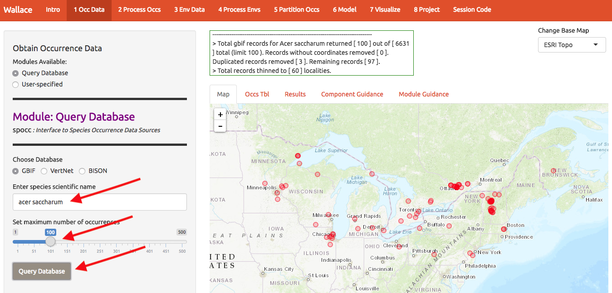
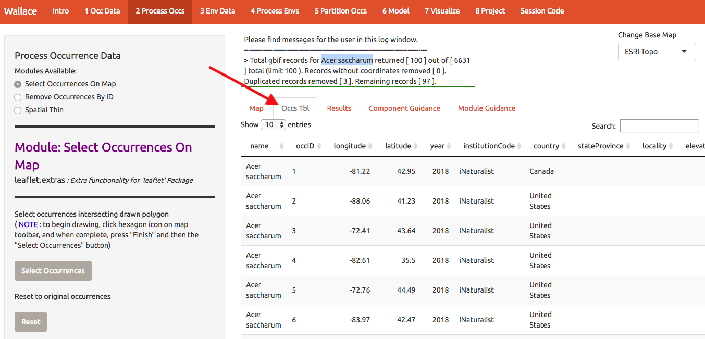
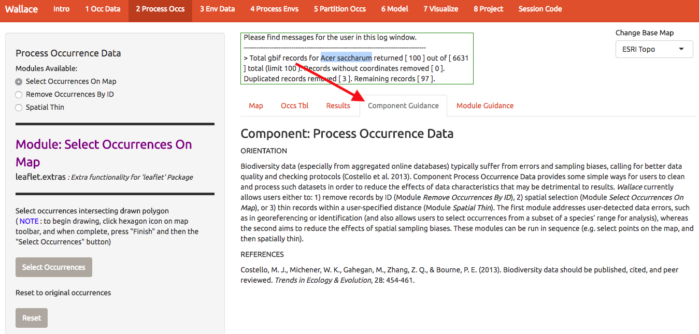
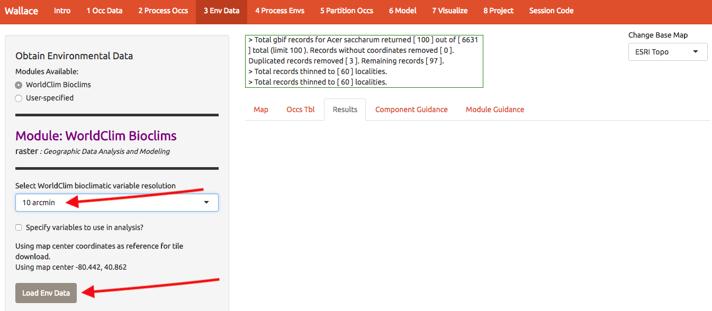
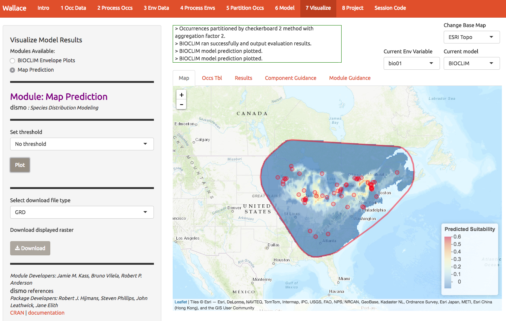
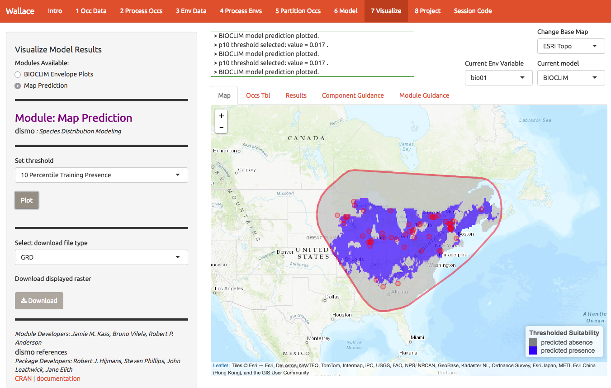
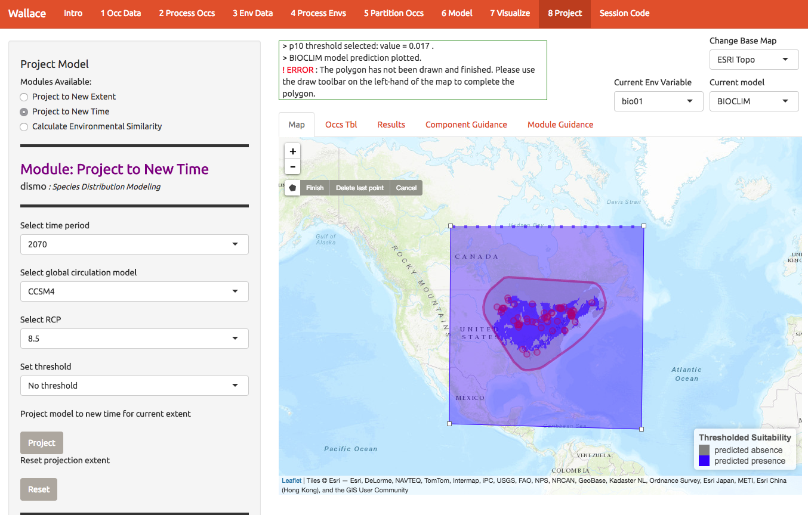

Species Distribution Modelling with Wallace
Overview and Objectives
In this exercise you will develop a simple species distribution model.
Objectives:
- Understand how species distribution models work
- Use the wallace software to develop a species distribution model and project it into a new time or place.
- Understand the limitations of species distribution models.
Setup
Run in Posit Cloud
You can use wallace (and run R) in the cloud with Posit Cloud. This is a free-to-use service that allows you to run RStudio or Python in a web browser. Note that Wallace is more unstable this way, so it may freeze up on you and you’ll need to start over. However, it doesn’t take much time to re-run an analysis so this isn’t a huge problem.
- Go to Posit Cloud
- Create a free account
- Click “New Project” in the upper right 3.5 Select RStudio Cloud
- After your new project opens, name it by replacing “Untitled Project” with something more meaningful (maybe “Wallace”)
Install Wallace libraries
Paste the following lines into the middle panel at the
> sign:
install.packages("rgdal")
install.packages("wallace")It will take a few minutes to install this software (and you will see lots of red text flow by). You will only need to install the libraries once. After they are installed you can just load the libraries as shown below.
Load and Run Wallace
Open the Wallace graphical user interface (GUI) by running the following commands:
library(wallace) # Load the library
run_wallace() # Open WallaceThe wallace GUI will open in your web browser and the R
command line will be occupied (you only get a prompt back by pushing
‘escape’). You may need to give permission to open a ‘popup’.
You need to avoid exiting your browser window or closing the R
window that initiated wallace or you’ll have to start over!
Luckily that’s pretty fast…
Typing run_wallace() will give you the following in
your web browser:

Get Occurrence Data
Start by getting about 100 records of Acer saccharum (sugar maple) from GBIF. Throughout, I’ll use a red arrow in the images below to indicate which buttons I’m referring to. The interface has changed a little from the screenshots below, but they will still be helpful.

Notice that there are tabs along the top, and you can view the sources of the occurrence data. Later you can choose to ditch some if it looks suspect.

Each Module (the tabs labeled 1-8 at the top of
the screen) comes with guidance and references by select the tabs at the
right.

Prepare Occurrences
Now let’s clean up the data. If we want to model A. saccharum in the US, we may want to toss points from other areas (such as Europe). You can do this by drawing a polygon around the points you want to keep. In this case we probably want to keep them all, but for some species there may be errant points that you want to discard.

The samples may exhibit spatial autocorrelation, which is best
to account for in the model or remove before modeling. For example,
there might be a bunch of samples near cities because these are mostly
from iNaturalist (citizen science) and citizen often live near cities.
So lets spatially thin the points and make sure they’re all at least
10km from one another. It takes a sec. That left me with 61 points for
modeling (yours may be different).

You can download these points for later reference if desired.
Get environmental data
Now we need some covariates to describe occurrence patterns. Worldclim is global climate data base that is very popular to both use and complain about. It seems pretty good in regions with lots of weather stations, but has issues, especially with precipitation-related things. Lesson: statistical models have problems if you don’t have data. So its perfectly good for coarse resolution work, and was a decade ahead of competitors that are only emerging now. We’ll add those to Wallace eventually.
Choose the 10 arcmin data and press download. The
first time you use wallace these data are slowly
downloaded; after that you don’t have to wait. Don’t select
finer resolution or you’ll be downloading while the rest of us
are modeling.

Prep environmental data
Now we need to choose the extent of the modeling domain. This jargon means that we have to define a sensible region to fit the model. Contrary to many publications, species ranges are not typically best modeling on domains defined by squares or political boundaries. Press some buttons on this screen to explore the options, but end up with something similar to that shown below. Press the Select button to trim the environmental layers to this polygon and download the result.
We will also need to select some background points to characterize the available habitat in the region. This will be compared to the habitat of the observations to infer whether there is a relationship with a particular type of environment.

Partition occurrences
In order to check whether you’ve built a decent model, you need some data to validate it. One solution is to partition your data into subsets (here 4) and build a models while witholding 1 subset at a time. Here we have 4 subsets, so we build 4 models, allowing us to get 4 independent measures of model performance. This is called k-fold cross-validation, and here k=4. There’s a whole literature on how to best make these subset; one option is to just do it randomly. A better option is to spatially stratify so that your model is forces to predict to regions that weren’t used for fitting. If it predicts well, you know you’ve got the general patterns right and have avoided overfitting to noise in the data. Below, I show some options for spatial stratification. Notice the 4 folds are now shown as 4 colors.

Take a moment to scroll through the log window at the top of the
screen and review all the steps you’ve taken so far.
Model
Finally, we’re going to make use of that results tab in the middle of the screen.
BIOCLIM
BIOCLIM is one of the simplest techniques for estimating a species’ niche and distribution. It characterizes the species’ observed environments (upper and lower limits of the training localities) for each axis independently, thereby delimiting its environmental envelope (or n-dimensional hypervolume of Hutchinson; Booth et al. 2014).
To do so and indicate conditions that are successively more commonly inhabited (inferred higher suitability), BIOCLIM generates a percentile distribution for each environmental predictor variable, considering the values associated with all occurrence localities. It then evaluates the ranking of environmental values for occurrence localities and other grid cells in the study region based on where they fall on these distributions (Hijmans and Graham 2006). The closer to the median percentile value, the more suitable an environmental value is considered, with both tails of the distribution interpreted identically. The minimum percentile score (full range of observed conditions) for any predictor variable is displayed on the map in Module Map Prediction in Component Visualize Model Results.
Model summary
Look at the Results tab to see model summary statistics. You can read more about these metrics in the “Component Guidance” tab.

7 Visualize
BIOCLIM Envelope Plots
To evaluate whether the model makes biological sense, we can look at climatic envelopes that define the estimated ‘hyperdimensional’ niche.
BIOCLIM variables
The bioclim predictors are a series of summaries of temp and precip that may have some biological significance.- BIO1 = Annual Mean Temperature
- BIO2 = Mean Diurnal Range (Mean of monthly (max temp - min temp))
- BIO3 = Isothermality (BIO2/BIO7) (* 100)
- BIO4 = Temperature Seasonality (standard deviation *100)
- BIO5 = Max Temperature of Warmest Month
- BIO6 = Min Temperature of Coldest Month
- BIO7 = Temperature Annual Range (BIO5-BIO6)
- BIO8 = Mean Temperature of Wettest Quarter
- BIO9 = Mean Temperature of Driest Quarter
- BIO10 = Mean Temperature of Warmest Quarter
- BIO11 = Mean Temperature of Coldest Quarter
- BIO12 = Annual Precipitation
- BIO13 = Precipitation of Wettest Month
- BIO14 = Precipitation of Driest Month
- BIO15 = Precipitation Seasonality (Coefficient of Variation)
- BIO16 = Precipitation of Wettest Quarter
- BIO17 = Precipitation of Driest Quarter
- BIO18 = Precipitation of Warmest Quarter
- BIO19 = Precipitation of Coldest Quarter
Read more about them here.
See below for a graph of two of the BIOCLIM variables with presences (red crosses) and background points (green circles). The blue box represents the ‘climate envelope’. On first glance the envelop does not seem to do a great job for these two variables, but withhold judgement until you assess the maps below. Note that the units for temperature variables are degrees C x 100; worldclim serves the files this way to compress them.)

Map Predictions
We can also map the predictions. At first glance it looks like a decent model because the presence points correspond to regions of higher suitability.

If you want to estimate presence/absence instead of a continuous suitability, select a threshold.

8 Project
Next we can evaluate the models ability to project first to new
locations (extending the domain) and/or new times (2070). First, extend
the domain by drawing a polygon like the one below. Double-clicking on
each of the 4 corners of this one draws the polygon. Next, press
Select and then Project to build the new
map.

See below for the projected change in the range of this species in 2070.

MAXENT
Maxent is a much more sophisticated modeling framework that has many advantages over the ‘bioclim’ approach used above. However, it tends to crash the Rstudio.cloud platform more often than bioclim. If you are feeling adventurous, you can try the following.
Maxent is a machine learning method that fits wiggly functions to patterns in the data. Its great for exploring complex patterns. If you construct it with a particular set of decisions it becomes very similar to a simple GLM. ### MAXENT settings
In the Modeling Tab, select “Maxent” and under Algorithm, select “maxnet.” Then explore the various options below.
- Select LQH features. These are the shapes that can be fit to the
data:
- L = Linear, e.g. temp + precip
- Q = Quadratic, e.g. temp^2 + precip^2
- P = Product, e.g. interaction terms of the form temp*precip
- H = Hinge, e.g. piecewise linear functions. Taking all possible pairs of these between data points, you can build a very flexible function, similar to a GAM (generalized additive model).
- T = Threshold, e.g. step functions between each pair of data points

- Select regularization multipliers between 1-3
- regularization is a way to reduce model complexity. Higher values = smoother, less complex models. Its kind of like using AIC during model fitting to toss out certain predictors. Just ask for more details.
- RM Step Value = 1
- how large of step to take between values in the slide bar above.
In the figure below is the non-linear response curve for this species with BIO05 (Max Temperature of Warmest Month). The shape of this curve suggests that this species prefers mid-range temperatures (not too hot, not too cold).

The figure below shows the projected suitability of this species across the original domain using MAXENT.

Extracting the code
A major advantage of wallace compared to other GUI-based
software is that you can extract all the code used to run the analysis.
This allows you to recall what you did, share it, or modify it. The code
is best extracted in R markdown format, which is a
convienient format for combining R and text (and actually forms the
basis of this website). Other formats are also available; for example
Microsoft Word output mught be useful if you live in the ’90s.
To download the code, select Rmd and click Download. You may need to go to your R window and allow R to set up a cache to proceed. Extraction takes a minute; currently it has to rerun all the analyses we just did.

Now, you should have an .Rmd file that contains your complete analysis. Sometimes, if you make a bunch of mistakes while playing with the GUI, you might get an error when extracting the .Rmd.
Rmd files combine regular text with code chunks,
shown by the red arrow below. Modules from wallace are
indicated as headers denoted by ###. For a quick
reference to Rmd syntax, see here

Assignment
You will use the workflow detailed above to study how the distibution of a species could be affected by future climate change. You may select any species (or potentially use the sugar maple as outlined above).